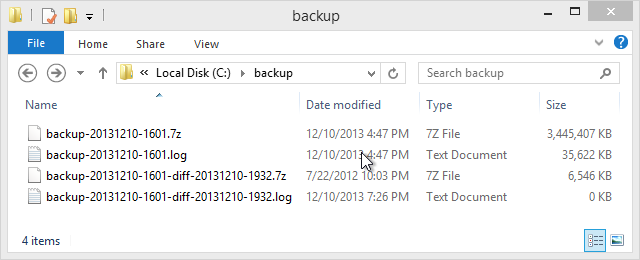
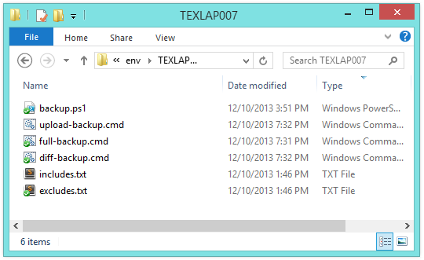

Differential backups using 7-zip and PowerShell
Backups are like changing the oil on your car. It’s the best thing you can do to extend the life of your engine and the best thing you can do to save yourself when your hard drive crashes, gets stolen, or otherwise corrupted.
I work remotely and needed a backup strategy for my work laptop. My company encourages you to keep critical client files and such in your personal share on the network. Most of our employees work in office so this is perfectly reasonable as the norm. (Though I bet a ton of stuff still ends up on local machines!) As a remotee however, this isn’t practical for reasons that are hopefully obvious to everyone.
There are as many backup strategies, scripts, and apps as there are computers. Today though, it was PowerShell to the rescue with the help of trusty 7-zip (command line version) and robocopy.
Requirements
- I’m not concerned with a full system backup. No need to image my hard drive, I only want to backup a specific set of directories that contain my working files.
- I need to backup to a local drive.
- I need to upload backups to my user share on the company network.
- I need a scheduled task that will perform the backup on a regular basis.
Implementation details
- Differential backups. Because I’ll be uploading these over a VPN, I want them to be as small as possible. Differential backups will allow me to upload a full backup once (or occasionally) and then upload much small backups daily.
- LZMA compression. I’ll sacrifice some speed during the backup stage but save a ton of time on the upload by compressing my backups using 7-zips LZMA (7z) compression format.
- Local hard drive space is limited so I’ll only keep the most recent backup locally. I’ll keep past backups on the company network and manually prune old ones when needed. This will be a casual safety net if I ever need to roll back to a specific point in time.
Results
Here’s what it looks like.
I’ll store my most recent backups locally in C:\backup. Timestamps in the names keep everything straight. Each backup has an accompanying log file.

My backup script is stored in Dropbox.
backup.ps1- The meat of the backup script. The various *.cmd scripts are just wrappers that pass this the appropriate arguments.upload-backup.cmd- Starts uploading all existing backups to the company network.full-backup.cmd- Starts a full backup.diff-backup.cmd- Starts a differential backup.includes.txt- A list of directory and file paths to include in the backup. This is passed to 7-zip.excludes.txt- A list of directory and file paths to exclude from the backup. This is also passed to 7-zip.

I have a Windows Scheduled Task that runs a differential backup (diff-backup.cmd) hourly. The differential backup is usually pretty fast, so running hourly is no problem.
I have another task that runs the upload (upload-backup.cmd) once a day when I am connected to the VPN. Task Scheduler is supposedly smart enough to only run the task if the VPN connection is available and to retry on a regular basis if it isn’t. I’ve never used this feature before so we’ll see how it goes. I can always fall back to manually running this via a desktop shortcut.
The Script
My script isn’t suited to sharing verbatim but I do want to share the good parts.
Selecting the most recent full backup
Differential backups have to be based on a full backup. The script is smart enough to find the most recent full backup file and use it as the base.
# Find the most recent full backup.
# Depends on Get-ChildItem returning the items sorted in ascending order (oldest backups first).
$fullBackup = Get-ChildItem -File -Path "$backupOutputPath\backup-[0-9][0-9][0-9][0-9][0-9][0-9][0-9][0-9]-[0-9][0-9][0-9][0-9].7z" | select -Last 1 -ExpandProperty FullName
if (-not ($fullBackup) -or -not (Test-Path $fullBackup -PathType Leaf)) {
throw "No full backup was found. Must have a full backup before performing a differential."
}
7-zip args for a full backup
$7zipArgs = @(
"a"; # Create an archive.
"-t7z"; # Use the 7z format.
"-mx=7"; # Use a level 7 "high" compression.
"-xr!thumbs.db"; # Exclude thumbs.db files wherever they are found.
"-xr!*.log"; # Exclude all *.log files as well.
"-xr-@`"`"$excludesFile`"`""; # Exclude all paths in my excludes.txt file.
"-ir-@`"`"$includesFile`"`""; # Include all paths in my includes.txt file.
"$outputFile"; # Output file path (a *.7z file).
)
Notice that I doubled some quotation marks for the excludes and includes arguments. This escaping is necessary to ensure the path I’m passing in works even if it has spaces in it.
7-zip args for a differential backup
$7zipArgs = @(
"u"; # Update an archive. Slightly confusing since we'll be saving those updates to a new archive file.
"$fullBackupPath"; # Path of the full backup we are creating a differential for.
"-t7z";
"-mx=7";
"-xr!thumbs.db";
"-xr!*.log";
"-xr-@`"`"$excludesFile`"`"";
"-ir-@`"`"$includesFile`"`"";
"-u-"; # Don't update the original archive (the full backup).
"-up0q3r2x2y2z0w2!`"`"$outputFile`"`""; # Flags to specify how the archive should be updated and the output file path (a *.7z file).
)
The last argument there is a doosey. Here’s what those flags mean.
-u- Starts the “update options” which follow.- Each letter represents a state of a file either in the base archive (our full backup) or on disk (the files we’re backing up).
p- File exists in archive, but isn’t in any of the include file paths. The file is no longer included in the backup (includes.txt probably changed).q- File exists in archive, but doesn’t exists on disk. The file has been deleted since the full backup.r- File doesn’t exist in archive, but exists on disk. The file is new since the full backup.x- File in archive is newer than the file on disk. (Odd.)y- File in archive is older than the file on disk. The file has been updated since the full backup.z- File in archive is same as the file on disk.w- Cannot be detected which file is newer (times are the same, sizes are different).
- After each of those letters is a number that represents what action to take on files matching that state.
0- Ignore file. Don’t include it in the backup.1- Copy file. Copy it from the old archive to the new. From our full backup to our new differential backup.2- Compress. Include the file from disk in our new differential backup.3- Create an anti-item. This is a feature only supported by 7z archives and basically puts a marker in the archive saying that this file has been deleted. If you extract this archive into a directory where this file exists then it will be deleted during the extraction.
- Everything after the ! is specifying the output file path.
You can read more about 7-zip’s options in their documentation.
Watching for exit codes
I want my backup to fail if 7-zip fails.
& $7zip @7zipArgs | Tee-Object -LiteralPath $logFile
if ($LASTEXITCODE -gt 1) # Ignores warnings which use exit code 1.
{
throw "7zip failed with exit code $LASTEXITCODE"
}
Log 7-zip output to both the console and log file
Did you notice Tee-Object in the above snippet? That’s what handles this. The only downside is that your console output will be laggy due to PowerShell buffering the pipeline.
Deleting old backups
Remember, I’m only keeping the most recent full backup and most recent differential backup files locally. My script automatically deletes old backup files after a new backup is successful. This is the magic used to delete the old differential backups when a new one finishes.
# Clean up old differential backup files.
# Only keep the most recent differential backup.
# Depends on Get-ChildItem returning the items sorted in ascending order (oldest backups first).
$allDiffBackups = Get-ChildItem -File -Path "$backupOutputPath\backup-[0-9][0-9][0-9][0-9][0-9][0-9][0-9][0-9]-[0-9][0-9][0-9][0-9]-diff-[0-9][0-9][0-9][0-9][0-9][0-9][0-9][0-9]-[0-9][0-9][0-9][0-9].7z"
if ($allDiffBackups -is [array] ) {
[Array]:: Reverse($allDiffBackups)
$allDiffBackups | select -Skip 1 | % {
Write-Host "Deleting old differential backup. File: $($_.FullName)"
# Remove the matching log file.
Remove-Item -LiteralPath ([System.IO.Path ]::ChangeExtension($_.FullName, ".log")) -ErrorAction SilentlyContinue
$_
} | Remove-Item
}
Robocopy args to upload the backups
$robocopyArgs = @(
"$backupOutputPath"; # Source path
"$networkDestPath"; # Destination path
"/Z"; # Use restartable mode when transferring files.
"/FP"; # Log the full paths to files.
"/NP"; # Don't log progress percentages.
"/X"; # Log a list of 'extra' files that exist in the destination but not locally.
"/UNILOG+$logfile"; # Append to the specified log file.
"/TEE"; # Send output to the console in addition to the log file.
)
Those arguments will perform a shallow copy of all files in the source folder to the destination.
Note that since robocopy supports the /UNILOG+ and /TEE arguments I don’t have to use Tee-Object to append to the log file.
Once again, I’ll make sure the copy is successful and fail the script if the copy fails.
& $robocopy @robocopyArgs
if ($LASTEXITCODE -ge 8) # exit code when files failed to copy
{
# robocopy exit codes: http://support.microsoft.com/kb/954404
throw "robocopy failed with exit code $LASTEXITCODE"
}
Passing args from PowerShell to executables
There are a million ways, of course, but my favorite is to put the arguments into an array and let PowerShell splat them. I really like how this keeps the script readable even when you are passing a ton of arguments around.
$cmdArgs = @(
"/E";
"/UNILOG+$logfile";
)
& some_application.exe @cmdArgs
The only thing to be aware of here is that if one of your $cmdArg items contains a SPACE then PowerShell will automatically wrap the argument in double quotes when passing it to the executable.
If you are having trouble getting your quotes and other special characters escaped properly, I’ve written several EchoArgs apps to help. They just echo back the arguments passed in so you can see how they are being received.
Epilogue
Hopefully this will help you get a jump start on your own backup strategy. Please, hit me up in the comments if you have any questions.